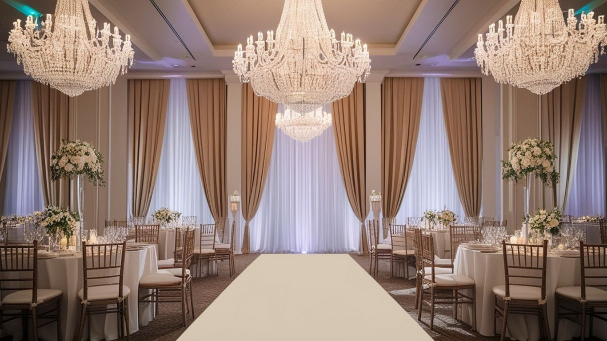
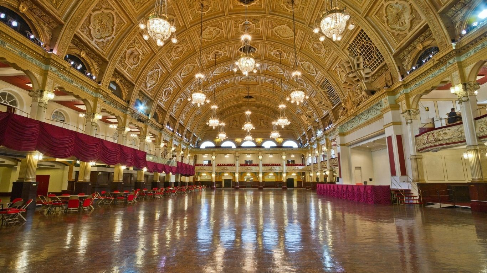
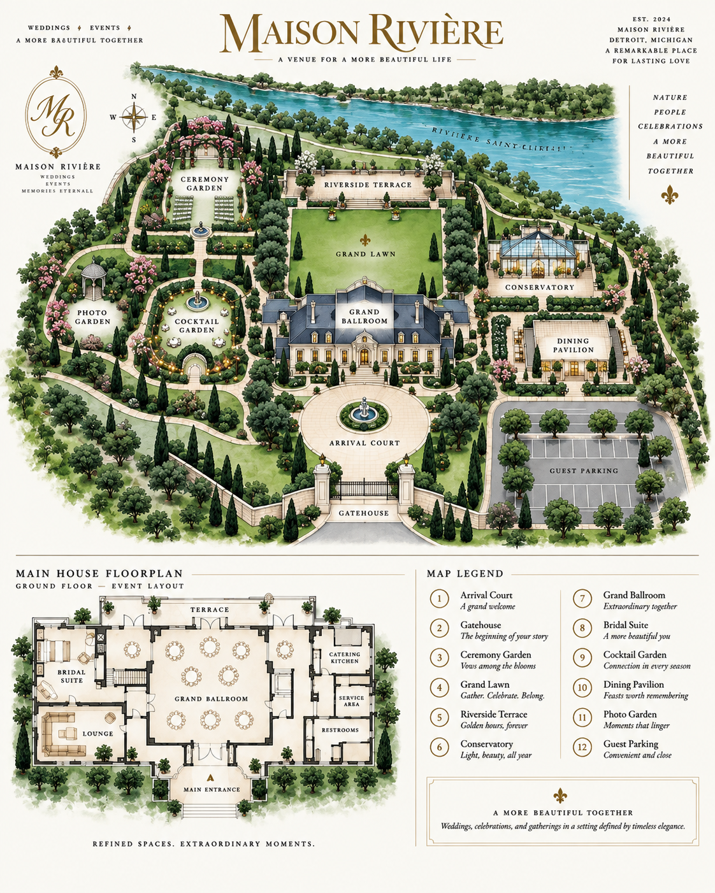
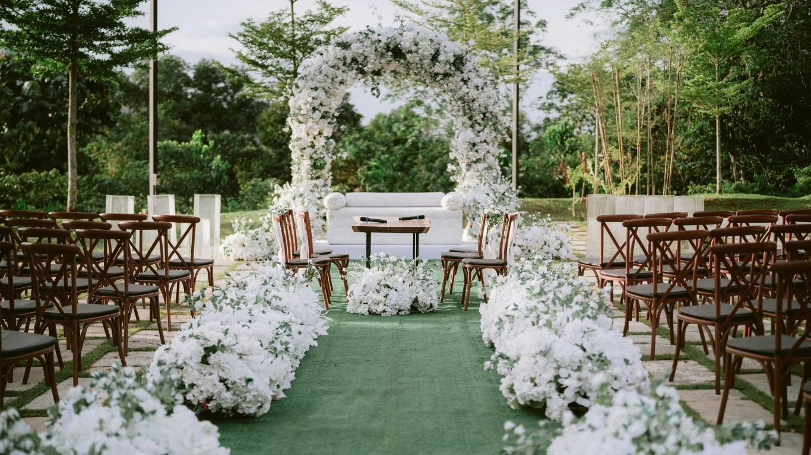
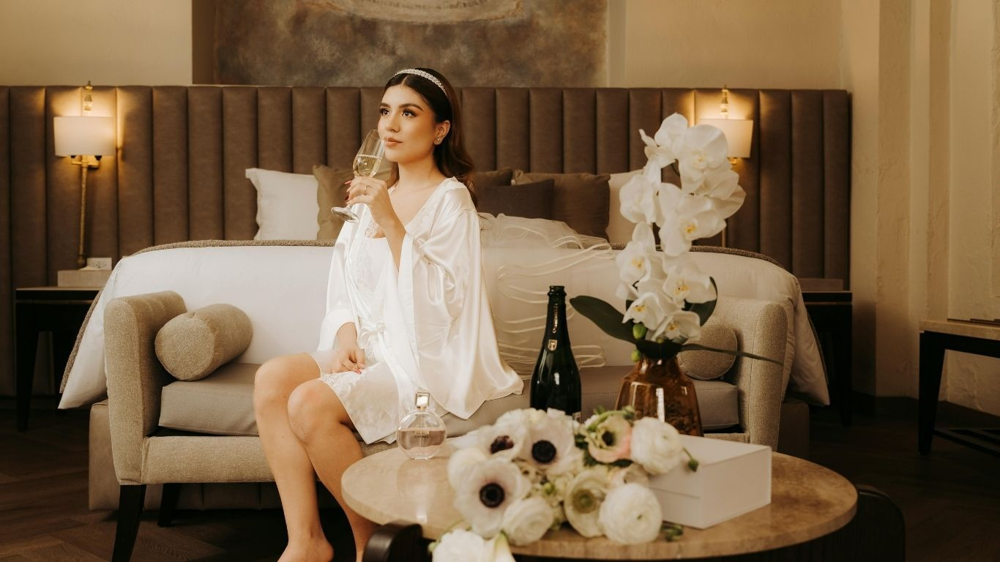
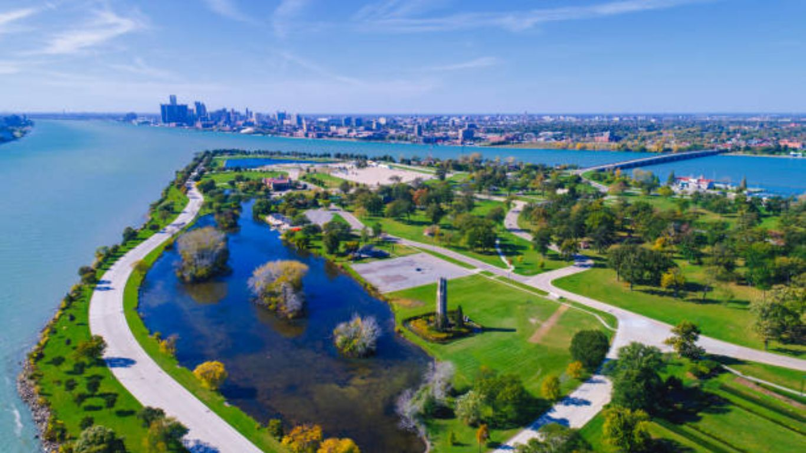

Up to 300
Grand Ballroom
Reception layouts, dancing, stage and custom lighting.

Grand architecture, intimate gardens and waterfront-inspired outdoor spaces, connected for a seamless guest journey.

Select a numbered place or follow a journey. Illustrated studio concept; locations and routes are not a surveyed property plan.

Reception layouts, dancing, stage and custom lighting.

A floral outdoor setting with a designed aisle and rain-plan flexibility.

Dedicated preparation, portraits, beauty stations and champagne service.

The concept blends formal gardens, grand reception spaces and city-connected river views into a property that feels like a destination without leaving Detroit.